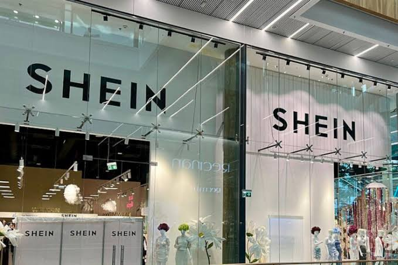

Breaking News
 July 27
July 27
by James Thornton
Shein has filed for a Hong Kong IPO as it deals with widening losses, the impact of U.S. tariffs on Chinese goods, and lingering reputational issues related to Xinjiang cotton sourcing
Fast fashion retailer Shein is eyeing a listing in Hong Kong, which could be one of the year's largest IPOs, as the company faces headwinds on the reputation and financial front. The IPO filing comes amid scrutiny for the company over reports it uses cotton from Xinjiang, where global brands have come under fire over concerns of forced labor. The prospectus made no mention of the Xinjiang issue but was said to have set out the company's wider strategy and growth prospects as it seeks to tap global markets for investment. It has also been buffeted by economic headwinds, with losses widening sharply amid tariff hikes and cost pressures as it seeks to reassure investors.
The Hong Kong listing highlights the company’s wish to increase its financial footprint beyond private ownership. Hong Kong is an obvious launchpad for Shein to access Asia’s largest financial centers and deep pools of capital, particularly from investors looking to capitalize on consumer and technology growth stories in the region. The offering comes as Shein, which is competing with established global brands in Europe and North America, seeks to raise cash to fund expansion of operations, logistics and marketing, as well as provide liquidity for early investors. The listing plan comes as there is growing interest in Asian IPO markets as tech, consumer and e-commerce firms look for alternatives to US equity markets.
Shein’s ties to cotton from Xinjiang have attracted criticism from human rights advocates and some governments and have been one of the thorniest issues for its business. Shein did not disclose in its IPO regulatory filings its sourcing of Xinjiang cotton, in a bid to assuage investors' concerns over reputational and regulatory risks, according to reports. Companies sourcing from China's Xinjiang region face pressure from the government and consumers over allegations of forced labor and human rights abuses in the region's cotton industry and some global buyers are seeking alternative suppliers to avoid controversy and regulatory penalties. Shein may be trying to ride out the reputational storm and appeal to a global investor audience by telling the IPO story through the lens of strategy and growth.
The latest financials reveal that fast-growing Chinese global fast-fashion platform Shein is struggling to stay profitable. But the company’s losses ballooned in the period before the IPO filing, according to news reports. Higher shipping costs and U.S. tariffs on Chinese imports have raised the cost of shipping apparel to U.S. consumers, squeezing margins. The tariff increases, part of a broader trade policy targeting Chinese imports, have eaten into profit margins and raised competitive pressure as Shein tries to keep prices low for shoppers. “The rising losses simply underline the need for the company to raise cash in the IPO and show investors a clear route to sustainable profits.”
U.S. tariffs on some Chinese goods have been particularly damaging for Shein and other companies that depend on global supply chains. U.S. policy initiatives to reduce trade deficits and increase domestic manufacturing have resulted in increased tariff barriers on Chinese exports, including finished garments and apparel inputs. Shein’s costs to get products into one of its most important markets increased, causing changes to pricing, logistics strategy and profit outlook. Some analysts said the tariff pressure had not hurt revenue growth but had eroded profitability, and was a problem Shein needed to address as it pitched to investors ahead of its Hong Kong IPO.
Shein’s IPO is a painful moment for investors around the world. The company has become a major name in fast fashion e-commerce, especially among younger shoppers who like its cheap prices and trend-led products. But investors might be concerned about profitability, supply chain risk, regulatory exposure and global trade tensions. Investors will be watching how Shein navigates cost pressures, U.S. tariffs and reputational issues tied to its sourcing. The IPO will be a test of how well Shein’s growth story can weather short-term financial and geopolitical challenges in a competitive retail market, analysts said.
The timing also coincides with Hong Kong’s moves to woo big listings and boost its position as an international capital market. Hong Kong authorities have positioned the city’s exchange as a venue for big-name IPOs, especially from Asian tech and consumer brands. The potential listing could be very exciting if Shein can drum up investor interest and reach a valuation that will enable it to fund future growth initiatives. But with some ambiguity around financial performance and external pressures, the offering could draw increased attention from market participants.
Shein’s IPO is a test of larger structural changes in the global retail business. E-commerce platforms need to balance their growth rate with evolving regulatory and economic conditions including trade policy, sustainability expectations and geopolitical risk. In this world, the winners are the companies that combine logistical innovation with nimble strategies that can change with tariffs, consumer tastes and regulatory scrutiny. Shein’s IPO isn’t only about raising money. The milestone is a sign of its transformation from a private startup to a publicly traded global retailer.
As Shein gets ready for a Hong Kong listing, its executives will have to calibrate plans to woo investors amid external headwinds. How Shein handles tariff hits, supply chain sensitivities and reputational issues will be key to its post-IPO success. This is a milestone for international retail, capital markets and the future of fast fashion e-commerce as the global fast fashion giant enters the public markets.

James Thornton is a U.S. business reporter covering markets, technology, and economic policy.